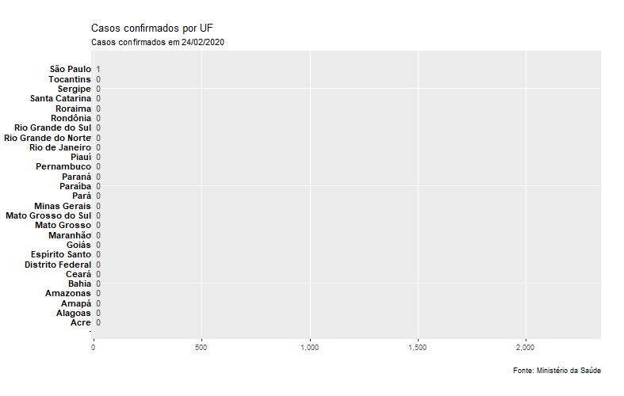
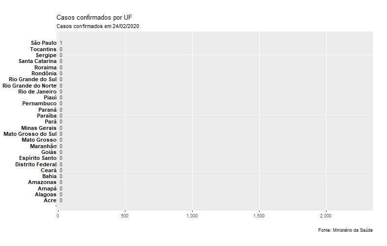

Fontes dos dados
Os dados referentes ao Brasil são retirados do site do Ministério da Saúde:
Os dados também podem ser obtidos nos boletins diários publicados na Agência Saúde.
Como o MS só disponibiliza os dados do último dia, os dados completos (séries temporais) podem ser obtidos aqui:
http://www.alanmol.com.br/covid-19/data/estados.csv
Os dados referentes a outros países são retirados do projeto Our World in Data, da Universidade de Oxford:
https://ourworldindata.org/coronavirus-source-data
Outras referências
Diversos grupos estão compilando seus próprios dados e criando diferentes visualizações referente ao Coronavirus. Alguns destes são listados abaixo:
- Observatório COVID-19 BR
- Pacote de R com os dados do Brasil (covid19br)
- Pacote de R com os dados do Brasil e gráficos (coronabr)
- Repositório Kaggle com dados do Brasil por estado
Os dados podem diferir um pouco dos apresentados aqui por diferenças nas referências (Secretarias Estaduais vs Ministério da Saúde)
Sites internacionais com informações de todo o mundo:
- Situation Reports da Organização Mundial da Saúde
- Our World in Data (University of Oxford)
- Coronavirus COVID-19 Global Cases (Johns Hopkins University)
- Worldometer COVID-19 Pandemic
- CoronaTracker - Gráficos e Clipping
Gráficos
Última atualização: 24/03/2020
- Brasil
- São Paulo
- Rio de Janeiro
- Espírito Santo
- Bahia
- Distrito Federal
- Alagoas
- Minas Gerais
- Rio Grande do Sul
- Paraná
- Pernambuco
- Goiás
- Santa Catarina
- Rio Grande do Norte
- Amazonas
- Sergipe
- Mato Grosso do Sul
- Ceará
- Acre
- Pará
- Paraíba
- Tocantins
- Mato Grosso
- Amapá
- Rondônia
- Piauí
- Maranhão
- Roraima
Brasil
Voltar ao sumário

Comparação entre Unidades da Federação
 



Comparação com outros países
Os dados de comparação com outros países possuem um "atraso" de um dia. Isso porque os dados são compilados pelo Our World in Data até as 14h (horário de Brasília, GMT -3), quando os dados oficiais mais recentes do Brasil normalmente são os do dia anterior.


Óbitos

A letalidade média foi calculada pela média da taxa dos países que registraram ao menos 20 mortes.
Os valores da letalidade dependem da eficiência da confirmação de casos. É possível que, em países em situação mais grave, essa taxa seja superestimada pela diminuição do registro (mas não da ocorrência) de casos leves.
São Paulo
Voltar ao sumário

Rio de Janeiro
Voltar ao sumário

Espírito Santo
Voltar ao sumário

Bahia
Voltar ao sumário

Distrito Federal
Voltar ao sumário

Alagoas
Voltar ao sumário

Minas Gerais
Voltar ao sumário

Rio Grande do Sul
Voltar ao sumário

Paraná
Voltar ao sumário

Pernambuco
Voltar ao sumário

Goiás
Voltar ao sumário

Santa Catarina
Voltar ao sumário

Rio Grande do Norte
Voltar ao sumário

Amazonas
Voltar ao sumário

Sergipe
Voltar ao sumário

Mato Grosso do Sul
Voltar ao sumário

Ceará
Voltar ao sumário

Acre
Voltar ao sumário

Pará
Voltar ao sumário

Paraíba
Voltar ao sumário

Tocantins
Voltar ao sumário

Mato Grosso
Voltar ao sumário

Amapá
Voltar ao sumário

Rondônia
Voltar ao sumário

Piauí
Voltar ao sumário

Maranhão
Voltar ao sumário

Roraima
Voltar ao sumário